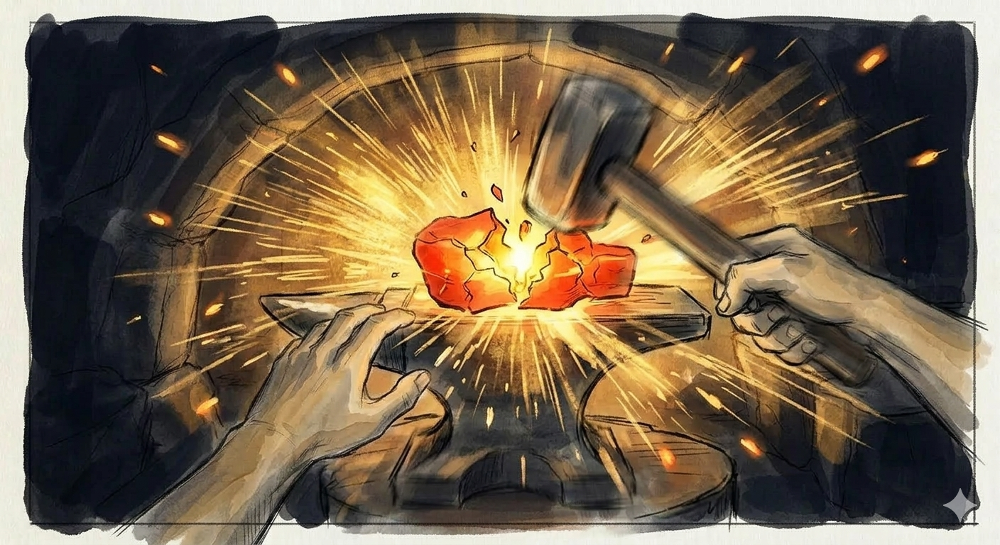
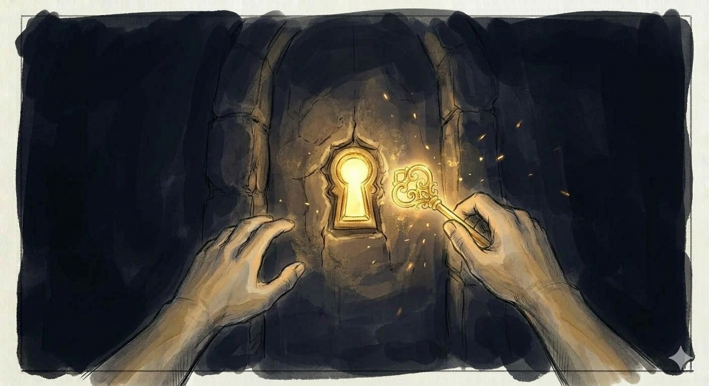

Storyboard
Prologo — L'Ingresso
Il Buio
Buio quasi totale. Al centro dell'inquadratura, due mani viste in prima persona emettono una luce dorata tenue. Sotto le mani, un pavimento d'acqua nera e immobile riflette la luce. Nient'altro è visibile.

Onboarding: le sfere
Tre piccole sfere di luce bianco-dorata fluttuano davanti alle mani luminose. Una sfera è toccata da un dito indice e reagisce con un alone luminoso. L'acqua sotto riflette le luci.

La luce arancione in lontananza
Il buio si apre. All'orizzonte dell'acqua nera, una luce arancione intensa e calda emerge. L'acqua inizia a incresparsi con riflessi arancioni. Le mani del giocatore in primo piano.

Atto 1 — Il Fuoco
La Fucina: l'ambiente
Il giocatore è seduto davanti a un tavolo da fabbro in una caverna sotterranea. Braci ardenti, scintille nell'aria. Sull'incudine un blocco incandescente rosso-arancio, informe e pulsante. A destra, un martello.

La Fucina: il colpo
Momento dell'impatto. Il martello colpisce il blocco incandescente sull'incudine. Esplosione di scintille dorate in tutte le direzioni. Il blocco si deforma, rivela una crepa luminosa dorata.

La chiave rivelata
Il blocco si è trasformato. Sull'incudine giace una chiave luminosa dorata che brilla di luce propria. Le ultime scintille si spengono. Le mani del giocatore si avvicinano per prenderla.

La Porta
Buio totale. Una grande porta di pietra scura emerge dal nulla con una serratura luminosa al centro. La mano del giocatore tiene la chiave dorata, estesa verso la serratura.

Atto 2 — L'Acqua
Il Mare: le pietre fluttuanti
Il giocatore è seduto su uno scoglio, sulla riva di un mare vasto e calmo, di notte. Cielo stellato immenso. Davanti a lui, 6 pietre scure con frasi incise in luce fluttuano in semicerchio. L'orizzonte è infinito, vuoto.

Il Lancio: la pietra in volo
Momento dinamico. Una mano ha appena lanciato una pietra verso il mare. La pietra è in volo, la frase si dissolve in particelle luminose. In lontananza, appena percettibile sull'orizzonte, una tenue sagoma dorata seduta su una sedia.

Lo Splash: onda luminosa
La pietra colpisce la superficie del mare. Un grande splash luminoso — l'acqua si illumina con un'onda circolare di luce azzurro-bianca. L'acqua intorno diventa più chiara. La sagoma sullo sfondo è leggermente più vicina.

La Figura si avvicina
Metà delle pietre lanciate. La sagoma dorata è a media distanza — chiaramente visibile. Figura umana semi-trasparente, fatta di particelle dorate, seduta su una sedia semplice, sul mare. Ferma, paziente, rivolta verso il giocatore.

L'ultimo lancio: la Figura è vicina
L'ultima pietra sta per essere lanciata. La mano del giocatore stringe l'ultima pietra. La sagoma è ora vicina — a 2-3 metri. Dettagli visibili: spalle, capo leggermente inclinato, mani in grembo. L'acqua tra loro è quasi interamente luminosa.

Atto 3 — L'Incontro sul Mare
Faccia a faccia
Tutte le pietre lanciate. La sagoma è di fronte al giocatore, a 2 metri. Due figure sedute faccia a faccia, sul mare, sotto le stelle. Sagoma di particelle dorate, senza volto, su una sedia semplice di legno. Solo due presenze.

Le sfere-parola
Piccole sfere con parole luminose ("Grazie", "Mi manchi", "Ti perdono", "Ti voglio bene") fluttuano in un semicerchio lento intorno alla sagoma. La mano del giocatore si avvicina per toccare una sfera.

Il tocco: la parola che raggiunge
Close-up. Il dito indice tocca una sfera. La sfera si dissolve in un flusso di particelle dorate che fluiscono verso la sagoma. La sagoma reagisce: il capo si inclina dolcemente, una mano si alza in riconoscimento.

Il Silenzio: due presenze sul mare
Wide shot. Nessuna sfera, nessun oggetto. Solo il giocatore e la sagoma, seduti faccia a faccia sul mare sotto un cielo stellato immenso. L'acqua è calma e luminosa. Silenzio totale.

La Dissoluzione: braccia aperte
La sagoma si dissolve. Le braccia si aprono verso il giocatore — un abbraccio a distanza. Le particelle dorate si separano: alcune sull'acqua come riflessi, alcune verso il cielo come stelle, alcune sospese come lucciole. La sedia resta un momento, vuota, poi si dissolve. Dove sedeva la figura: un punto di luce dorata.

Epilogo — L'Alba sul Mare
L'alba nasce dal punto di luce
Il punto di luce dove sedeva la sagoma si espande. L'orizzonte si accende — la luce cresce dal mare, non dal cielo. Viola e indaco, poi arancione e rosa, infine oro pieno. Le mani del giocatore brillano della stessa luce dorata della sagoma.

Le mani creative sul mare
L'alba è in corso. Il giocatore alza le mani con i palmi verso l'alto. Dalle dita, stelle si staccano e salgono. Sul mare, onde di luce si propagano. Gabbiani emergono dall'acqua luminosa. Il mondo si risveglia.

L'Alba piena: il mare luminoso
Wide shot finale. Il giocatore è al centro di un mare immenso e luminoso all'alba. Cielo dorato-rosa. Gabbiani, onde gentili. In lontananza, la chiave brilla come stella. Una lucciola vola vicino. Nel punto dove sedeva la figura, un riflesso dorato permanente. Pace.

Galleria — Concept Art